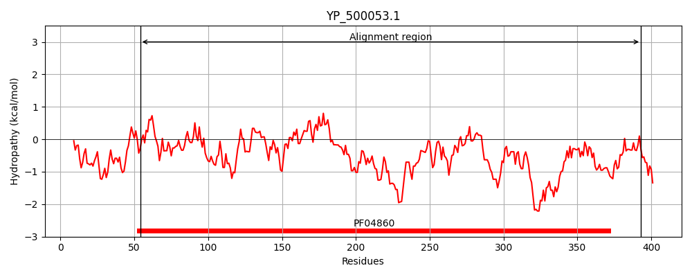
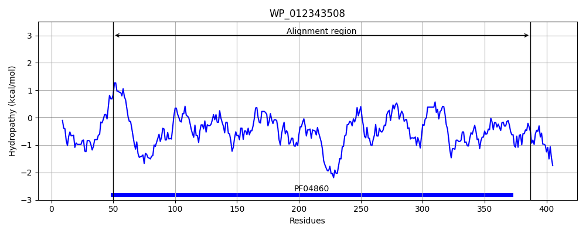
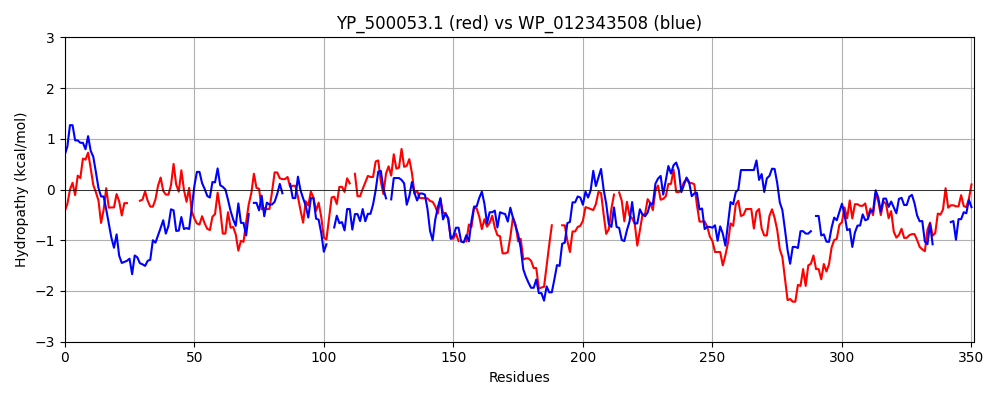

Hit Accession: WP_012343508
Hit TCID: 1.W.2.1.3
Hit Description: gnl|BL_ORD_ID|20810 gnl|TC-DB|WP_012343508.1|1.W.2.1.3 phage portal protein [Clostridium botulinum]
Mach Len: 351
e:0.000000
Query TMS Count : 0
Hit TMS Count: 0
TMS-Overlap Score: 0.000000
Predicted Substrates:CHEBI:4291;deoxyribonucleic acid
BLAST Alignment:
Score: 319 , Bit scores: 127 bits, E-value: 7.9e-33, Alignment length: 351, Percentage identity: 28
Query: 54 IFSAITKLSNSMASLPLKMYEDYKV----VNTEVSDLLTVSPNNSLSSFDFINQIETIRNEKGNAYVLIERDIYHQPSKLFLLNPDVVEMLIENQSRELYYSIHAATGNKL-IVHNMDMLHFKHIVASNMVQGISPIDVLKNTTDFDNAVRTF--NLTEMQKPDSFMLKYGSNVSTEKRQQVLEDFKQY---YEENGGILFQEPGVEIEPLPK-KYVSEDIVASENLTRERVANVFQLPSIFLNARSNTNFAKNEELNRFYLQHTLLPIVKQYEEEFNRKLLTKTDREKNRYFKFNVKSYLRADSATQAEVYFKAVRSGYYTINDIREWEDLPPVEGGDKPLISGDLYPID 393
+++ +++S++ LP+ +Y+ K V+ +VS LL PN ++ F + GN YV IER + L++LN V++L + E+ Y A NK N +++H K + +++ + G S ID+L+ T + R N + S ++ Y SN++T+ + ++ + +++ Y+ G + + G+E + + K+ + + S T E +A VF++P +N+ + F E+ + + +T+LP++ Q EEEFN KL + T REK + KFN++ LR DSAT++ Y K + G Y+IN++R+ E++ + I GD + +D
Sbjct: 50 VYACTDIIASSISKLPIHIYQKNKDGSNRVDNDVSYLLEKRPNLYMTPSTFKQTLTVKLLLDGNTYVWIERR-RGKAINLWILNN--VQVLQDPTKGEIIYK--ATLNNKSHTFFNDEIIHIKSL-STDGILGKSKIDILRETIGNMQSSRKLLGNYFKNGTTTSGVITYPSNLNTDAKTEIRKQWQENNSGYDNAGKVAVLDLGLEYKEINSLKFTDQQFLESTKFTLEEIARVFKVPLHMINSLDRSTFNNIEQQSLDFYMNTILPLLLQIEEEFNYKLFSSTQREK-YFIKFNMEGALRGDSATRSAYYEKMINLGVYSINEVRKLENMNSIG------IQGDTHRVD 387 | Protein Hydropathy Plots: |
|---|
|  |  |
Pairwise Alignment-Hydropathy Plot:
|
|---|
|  |